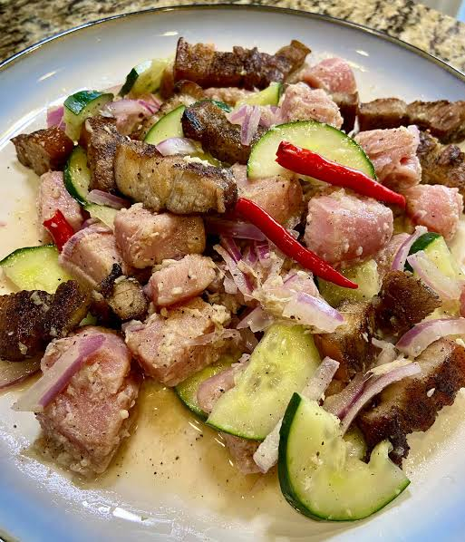

Sinuglaw

Description
Sinuglaw is a Cebuano dish that combines grilled pork with fresh tuna ceviche. The smoky pork and bright, citrus-marinated tuna create a savory, refreshing blend of flavors.
Ingredients
- 450 g fresh tuna, diced
- 450 g pork belly, grilled and diced
- 1/2 cup vinegar
- 1/4 cup calamansi or lime juice
- 1 small red onion, diced
- 1 thumb-sized piece of ginger, minced
- 1 chili pepper, sliced
- Salt and pepper to taste
Steps
- Grill the pork belly until cooked through and lightly charred, then dice it into bite-sized pieces.
- Place the diced tuna in a bowl and season it with vinegar, calamansi juice, salt, and pepper.
- Let the tuna marinate for 10 to 15 minutes.
- Add the grilled pork, onion, ginger, and chili to the tuna.
- Mix gently and serve chilled or at room temperature.